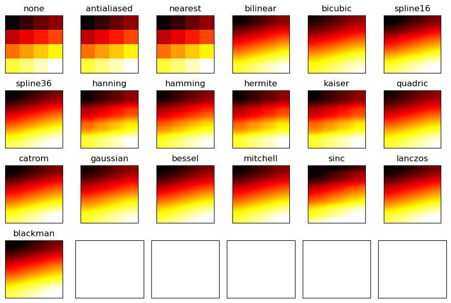
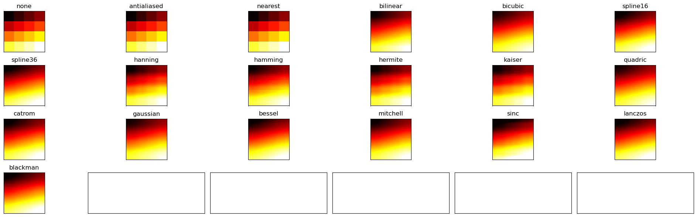

hanon-c8#
%matplotlib inline
import numpy as np
import matplotlib.pyplot as plt
# img1 = plt.imread("D:/Dataset/4.2.03.tiff")
# img1 = plt.imread("~/Dataset/4.2.03.tiff")
img1 = plt.imread("img/handon-c4-test-4-66.tiff") #test.png")
img2h = plt.imread("media/hk2.tiff")
img2t = plt.imread("media/Tk2.tiff")
def showimg(img1):
'''
"Please open the URL for reading and pass the "
1522 "result to Pillow, e.g. with "
1523 "``np.array(PIL.Image.open(urllib.request.urlopen(url)))``."
'''
print(img1) # no dtype= as in tiff
print(type(img1))
plt.imshow(img1)
plt.show()
return
showimg(img2h)
showimg(img2t)
[[[ 0 0 0 0]
[228 228 228 48]
[226 226 226 134]
...
[226 226 226 136]
[228 228 228 49]
[ 0 0 0 0]]
[[228 228 228 49]
[222 222 222 191]
[215 215 215 255]
...
[215 215 215 255]
[223 223 223 192]
[228 228 228 49]]
[[222 222 222 134]
[210 210 210 255]
[207 207 207 255]
...
[207 207 207 255]
[210 210 210 255]
[221 221 221 135]]
...
[[168 168 168 255]
[168 168 168 255]
[168 168 168 255]
...
[143 143 143 255]
[ 99 99 99 255]
[168 168 168 255]]
[[168 168 168 255]
[168 168 168 255]
[168 168 168 255]
...
[ 99 99 99 255]
[196 196 196 255]
[168 168 168 255]]
[[167 167 167 255]
[167 167 167 255]
[167 167 167 255]
...
[167 167 167 255]
[167 167 167 255]
[167 167 167 255]]]
<class 'numpy.ndarray'>

[[[0 0 0 0]
[0 0 0 0]
[0 0 0 0]
...
[0 0 0 0]
[0 0 0 0]
[0 0 0 0]]
[[0 0 0 0]
[0 0 0 0]
[0 0 0 0]
...
[0 0 0 0]
[0 0 0 0]
[0 0 0 0]]
[[0 0 0 0]
[0 0 0 0]
[0 0 0 0]
...
[0 0 0 0]
[0 0 0 0]
[0 0 0 0]]
...
[[0 0 0 0]
[0 0 0 0]
[0 0 0 0]
...
[0 0 0 0]
[0 0 0 0]
[0 0 0 0]]
[[0 0 0 0]
[0 0 0 0]
[0 0 0 0]
...
[0 0 0 0]
[0 0 0 0]
[0 0 0 0]]
[[0 0 0 0]
[0 0 0 0]
[0 0 0 0]
...
[0 0 0 0]
[0 0 0 0]
[0 0 0 0]]]
<class 'numpy.ndarray'>
plt.imshow(img2t, cmap = 'gray') # not work for png, tiff as well
plt.show()
plt.imshow(img2t, cmap = 'cool')
plt.show()
plt.colormaps()
['magma',
'inferno',
'plasma',
'viridis',
'cividis',
'twilight',
'twilight_shifted',
'turbo',
'Blues',
'BrBG',
'BuGn',
'BuPu',
'CMRmap',
'GnBu',
'Greens',
'Greys',
'OrRd',
'Oranges',
'PRGn',
'PiYG',
'PuBu',
'PuBuGn',
'PuOr',
'PuRd',
'Purples',
'RdBu',
'RdGy',
'RdPu',
'RdYlBu',
'RdYlGn',
'Reds',
'Spectral',
'Wistia',
'YlGn',
'YlGnBu',
'YlOrBr',
'YlOrRd',
'afmhot',
'autumn',
'binary',
'bone',
'brg',
'bwr',
'cool',
'coolwarm',
'copper',
'cubehelix',
'flag',
'gist_earth',
'gist_gray',
'gist_heat',
'gist_ncar',
'gist_rainbow',
'gist_stern',
'gist_yarg',
'gnuplot',
'gnuplot2',
'gray',
'hot',
'hsv',
'jet',
'nipy_spectral',
'ocean',
'pink',
'prism',
'rainbow',
'seismic',
'spring',
'summer',
'terrain',
'winter',
'Accent',
'Dark2',
'Paired',
'Pastel1',
'Pastel2',
'Set1',
'Set2',
'Set3',
'tab10',
'tab20',
'tab20b',
'tab20c',
'grey',
'gist_grey',
'gist_yerg',
'Grays',
'magma_r',
'inferno_r',
'plasma_r',
'viridis_r',
'cividis_r',
'twilight_r',
'twilight_shifted_r',
'turbo_r',
'Blues_r',
'BrBG_r',
'BuGn_r',
'BuPu_r',
'CMRmap_r',
'GnBu_r',
'Greens_r',
'Greys_r',
'OrRd_r',
'Oranges_r',
'PRGn_r',
'PiYG_r',
'PuBu_r',
'PuBuGn_r',
'PuOr_r',
'PuRd_r',
'Purples_r',
'RdBu_r',
'RdGy_r',
'RdPu_r',
'RdYlBu_r',
'RdYlGn_r',
'Reds_r',
'Spectral_r',
'Wistia_r',
'YlGn_r',
'YlGnBu_r',
'YlOrBr_r',
'YlOrRd_r',
'afmhot_r',
'autumn_r',
'binary_r',
'bone_r',
'brg_r',
'bwr_r',
'cool_r',
'coolwarm_r',
'copper_r',
'cubehelix_r',
'flag_r',
'gist_earth_r',
'gist_gray_r',
'gist_heat_r',
'gist_ncar_r',
'gist_rainbow_r',
'gist_stern_r',
'gist_yarg_r',
'gnuplot_r',
'gnuplot2_r',
'gray_r',
'hot_r',
'hsv_r',
'jet_r',
'nipy_spectral_r',
'ocean_r',
'pink_r',
'prism_r',
'rainbow_r',
'seismic_r',
'spring_r',
'summer_r',
'terrain_r',
'winter_r',
'Accent_r',
'Dark2_r',
'Paired_r',
'Pastel1_r',
'Pastel2_r',
'Set1_r',
'Set2_r',
'Set3_r',
'tab10_r',
'tab20_r',
'tab20b_r',
'tab20c_r']
import matplotlib.patches as patches
fig, ax = plt.subplots()
im = ax.imshow(img2h)
patch = patches.Circle((245, 200),
radius=200,
transform=ax.transData)
im.set_clip_path(patch)
ax.axis('off')
plt.show()

import matplotlib
import matplotlib.pyplot as plt
import numpy as np
img3 = [[1, 2, 3, 4],
[5, 6, 7, 8],
[9, 10, 11, 12],
[13, 14, 15, 16]]
plt.imshow(img3)
plt.show()

methods = ['none', 'antialiased', 'nearest', 'bilinear',
'bicubic', 'spline16', 'spline36', 'hanning',
'hamming', 'hermite', 'kaiser', 'quadric',
'catrom', 'gaussian', 'bessel', 'mitchell',
'sinc', 'lanczos', 'blackman']
fig, axs = plt.subplots(nrows=4, ncols=6, figsize=(9, 6),
subplot_kw={'xticks': [], 'yticks': []})
for ax, interp_method in zip(axs.flat, methods):
ax.imshow(img3, interpolation=interp_method, cmap='hot')
ax.set_title(str(interp_method))
plt.tight_layout()
plt.show()

fig, axs = plt.subplots(nrows=4, ncols=6, figsize=(20, 6),
subplot_kw={'xticks': [], 'yticks': []})
for ax, interp_method in zip(axs.flat, methods):
ax.imshow(img3, interpolation=interp_method, cmap='hot')
ax.set_title(str(interp_method))
plt.tight_layout()
plt.show()

print(zip(axs.flat, methods))
<zip object at 0x1157dc4c0>
print(np.tile(np.array([1,2,3]), (3, 1)))
#array([[1, 2, 3],
# [1, 2, 3],
# [1, 2, 3]])
print(np.array([[1,2,3],]*3))
#or for repeating columns:
print(np.tile(np.array([[1,2,3]]).transpose(), (1, 3)))
#array([[1, 1, 1],
# [2, 2, 2],
# [3, 3, 3]])
print(np.array([[1,2,3],]*3).transpose())
[[1 2 3]
[1 2 3]
[1 2 3]]
[[1 2 3]
[1 2 3]
[1 2 3]]
[[1 1 1]
[2 2 2]
[3 3 3]]
[[1 1 1]
[2 2 2]
[3 3 3]]
%matplotlib inline
import matplotlib.pyplot as plt
from scipy.io import wavfile
def printaudio(sndf, plotting=True):
'''
File format b'' not understood. Only 'RIFF' and 'RIFX' supported
'''
samplerate, data = wavfile.read(sndf)
print(f"{sndf=}")
print(f"========================")
print(f"{samplerate=}")
print(f"{data=}")
print(f"{data[:20]=}") # up to 20 as 1 dim
print(f"{type(data)=}")
print(f"{data.shape=} and no. of sample is {data.shape[0]}")
print(f"{data.ndim=}")
print(f"{data.dtype=}")
print(f"{data.size=}")
print(f"{data.nbytes=}")
print(f"------------------------")
print()
if plotting:
plt.plot(data[:2000])
# assume stereo shape is (#####,2) but here is (####,)
# just 1 colour it seems
plt.show()
return data, samplerate
#printaudio("media/Rvb2.wav") #err
im2data, im2samplerate=printaudio("media/im2.wav")
we2data, we2samplerate=printaudio("media/welcome2.wav")
sndf='media/im2.wav'
========================
samplerate=11000
data=array([138, 133, 127, ..., 129, 129, 127], dtype=uint8)
data[:20]=array([138, 133, 127, 122, 121, 123, 129, 135, 141, 143, 141, 135, 126,
118, 112, 110, 113, 120, 127, 132], dtype=uint8)
type(data)=<class 'numpy.ndarray'>
data.shape=(10556,) and no. of sample is 10556
data.ndim=1
data.dtype=dtype('uint8')
data.size=10556
data.nbytes=10556
------------------------
sndf='media/welcome2.wav'
========================
samplerate=22000
data=array([119, 117, 115, ..., 125, 125, 125], dtype=uint8)
data[:20]=array([119, 117, 115, 113, 111, 110, 110, 110, 110, 111, 112, 113, 115,
117, 119, 121, 123, 125, 128, 130], dtype=uint8)
type(data)=<class 'numpy.ndarray'>
data.shape=(13405,) and no. of sample is 13405
data.ndim=1
data.dtype=dtype('uint8')
data.size=13405
data.nbytes=13405
------------------------

def printaudio(data, plotting=False, stereo=False):
'''
'''
print(f"data")
#print(f"{inspect.signature(printaudio)=}")
print(f"========================")
print(f"{data=}")
print(f"{data[:10]=}") # up to 20 as 1 dim
print(f"{type(data)=}")
print(f"{data.shape=} and no. of sample is {data.shape[0]}")
print(f"{data.ndim=}")
print(f"{data.dtype=}")
print(f"{data.size=}")
print(f"{data.nbytes=}")
print(f"------------------------")
print()
if plotting:
plt.plot(data[:2000])
# assume stereo shape is (#####,2) but here is (####,)
# just 1 colour it seems
plt.show()
if stereo:
c1 = data[:, 0]
c2 = data[:, 1]
print(f"{c1=}, {c2=}")
print(f"{c1.shape=}, {c2.shape=}")
plt.subplot(2, 1, 1)
plt.plot(c1[:]) #10*samplerate])
plt.subplot(2, 1, 2)
plt.plot(c2[:], c='g') #10*samplerate], c='g')
plt.show()
return
im2data2 = np.tile(im2data, (2, 1))
printaudio(im2data2)
# https://stackoverflow.com/questions/36384760/transforming-a-row-vector-into-a-column-vector-in-numpy
#im2data2.reshape(-1,2)
im2data2reshape = im2data2.reshape(-1,2)
printaudio(im2data2reshape, plotting=True, stereo=True) #im2data2.reshape(-1,2), plotting=True)
def dummy():
# not the way # im2data2reshapehalf = im2data2reshape
# not the way # printaudio(im2data2reshapehalf, plotting=True) #im2data2.reshape(-1,2), plotting=True)
#im2data3 = np.tile(im2data, (3, 1)) # data.shape=(2, 10556) and no. of sample is 2
#printaudio(im2data2, plotting=True)
#printaudio(im2data3) # , plotting=False)
# not copy as one more row but
# 2 data cell inside the row
#im2data3T = np.tile(im2data.transpose(), (3,2))
#printaudio(im2data3T) # , plotting=False)
#im2data3aT = np.tile(im2data3.transpose(), (2,3)) #, (3, 1)) #(1, 3))
#printaudio(im2data3T) # , plotting=False)
return
data
========================
data=array([[138, 133, 127, ..., 129, 129, 127],
[138, 133, 127, ..., 129, 129, 127]], dtype=uint8)
data[:10]=array([[138, 133, 127, ..., 129, 129, 127],
[138, 133, 127, ..., 129, 129, 127]], dtype=uint8)
type(data)=<class 'numpy.ndarray'>
data.shape=(2, 10556) and no. of sample is 2
data.ndim=2
data.dtype=dtype('uint8')
data.size=21112
data.nbytes=21112
------------------------
data
========================
data=array([[138, 133],
[127, 122],
[121, 123],
...,
[128, 128],
[128, 129],
[129, 127]], dtype=uint8)
data[:10]=array([[138, 133],
[127, 122],
[121, 123],
[129, 135],
[141, 143],
[141, 135],
[126, 118],
[112, 110],
[113, 120],
[127, 132]], dtype=uint8)
type(data)=<class 'numpy.ndarray'>
data.shape=(10556, 2) and no. of sample is 10556
data.ndim=2
data.dtype=dtype('uint8')
data.size=21112
data.nbytes=21112
------------------------
c1=array([138, 127, 121, ..., 128, 128, 129], dtype=uint8), c2=array([133, 122, 123, ..., 128, 129, 127], dtype=uint8)
c1.shape=(10556,), c2.shape=(10556,)
import scipy.fftpack
def fft(data, samplerate):
samples = data.shape[0]
datafft = scipy.fftpack.fft(data)
fftabs = abs(datafft)
print(fftabs)
freqs = scipy.fftpack.fftfreq( samples, 1/samplerate )
plt.plot(freqs, fftabs)
plt.show()
fft(im2data2reshape, im2samplerate)
[[271. 5.]
[249. 5.]
[244. 2.]
...
[256. 0.]
[257. 1.]
[256. 2.]]

# https://stackoverflow.com/questions/218616/how-to-get-method-parameter-names
def _get_args_dict(fn, args, kwargs):
args_names = fn.__code__.co_varnames[:fn.__code__.co_argcount]
return {**dict(zip(args_names, args)), **kwargs}